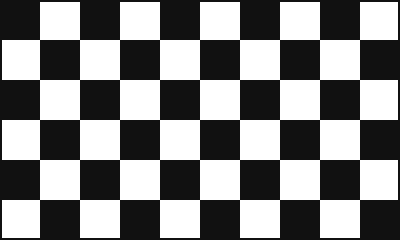

Ganadores recientes
| Año | Piloto |
|---|---|
| 2021 | Max Verstappen |
| 2022 | Sergio Pérez |
| 2023 | Max Verstappen |
| 2024 | Charles Leclerc |
| 2025 | Lando Norris |

Récords y curiosidades
- Ayrton Senna es el piloto con más victorias en Mónaco: seis.
- McLaren es el equipo más laureado en esta carrera.
- Juan Manuel Fangio ganó la primera edición del Mundial, en 1950.
Más estadísticas en Wikipedia y en Formula1.com.
Contacto
¿Quieres comentar algo sobre la carrera? Rellena el formulario y se abrirá tu programa de correo.